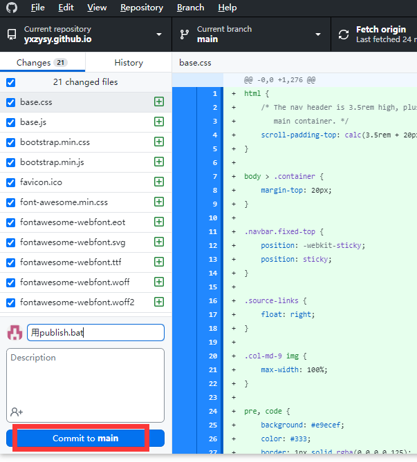
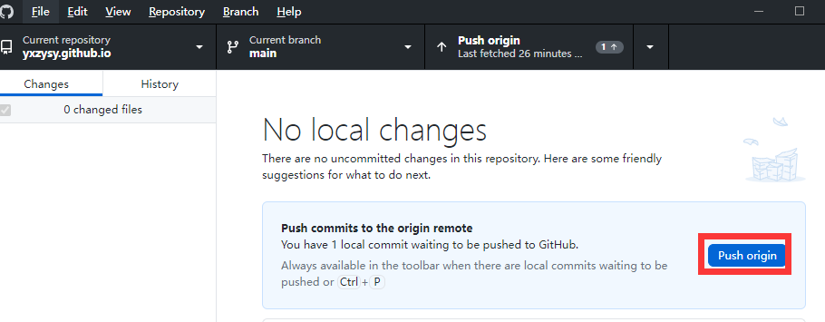
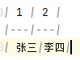
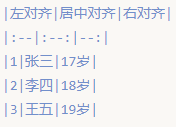

Mkdocs
本站
建站
1.在github上建站 https://zhuanlan.zhihu.com/p/58254227
2.安装和使用mkdocs https://cloud.tencent.com/developer/article/2247837
3.选择主题 https://github.com/mkdocs/mkdocs/wiki/MkDocs-Themes
运维
1.pycharm编辑markdown文件
2.localrun.bat本地起站（浏览器转不出来就在cmd打打回车，有时候可能卡住了）
3.publish.bat发布到本地repository
4.用github desktop做commit和push
5.网站地址 https://yxzysy.github.io/
6.库地址 https://github.com/yxzysy/yxzysy.github.io
localrun.bat脚本
set path=c:\Python37;c:\Python37\Scripts
set PYTHONUSERBASE=c:\Python37
mkdocs serve
publish.bat脚本
set path=c:\Python37;c:\Python37\Scripts
set PYTHONUSERBASE=c:\Python37
cd c:\Python37
mkdocs build
mkdocs.yml文件
site_name: AI Tools Gallery
site_dir: ../yxzysy.github.io
theme:
name: united
locale: cn
static_templates:
- sitemap.html
include_sidebar: true
site_dir指定发布到的文件夹
 
命令
mkdocs new [dir-name]- Create a new project.mkdocs serve- Start the live-reloading docs server.mkdocs build- Build the documentation site.mkdocs -h- Print help message and exit.
布局
mkdocs.yml # The configuration file.
docs/
index.md # The documentation homepage.
... # Other markdown pages, images and other files.
Markdown语法
用|和-做表格

| 1 | 2 |
|---|---|
| 张三 | 李四 |
|  |
编程
开源软件
1.DARC
lidangzzz 立党 Lidang 的去中心化公司软件
2.李跳跳自定义规则
基础规则：关闭应用内广告、更新弹窗、青少年模式弹窗、权限索取提示等
增强规则：自动化操作等
工具软件
1.Shader
APP,视频生成AR面具
2.生成临时邮箱
用于匿名注册各种网站
3.移除图片背景
4.一键发布到多个平台
5.自动录屏软件
6.WalframAlpha 数学计算工具
Finnacial software
1.证券宝 开源
2.Stock-Prediction-Models 用AI模型进行股价预测
3.Python Training 开源，面向JPMorgan的业务分析师和交易员，以及精选客户
4.GS Quant 高盛的量化交易软件
5.TradingGym 基于algo的强化学习用于交易和回测
6.Shioaji Python程序，提供投資者在台灣和全球金融市場上進行交易，支持自建跨平台交易模型。由永豐金證券提供的，是台灣第一個兼容 Linux 的 Python 交易應用程式介面
7.volatility-trading 基于Euan-Sinclair波动性交易的一套完整的波动性策略
8.OpenBBTerminal 开源的金融终端OpenBB